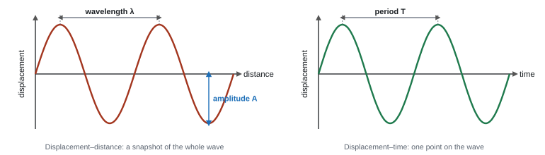
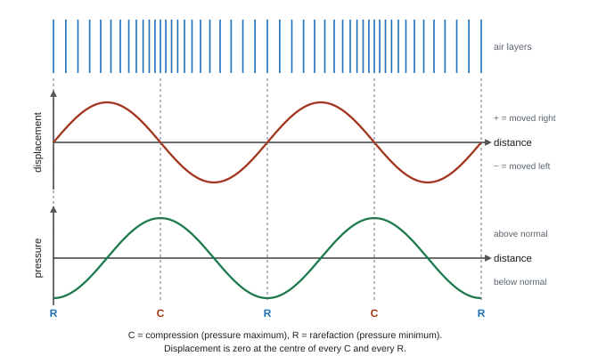
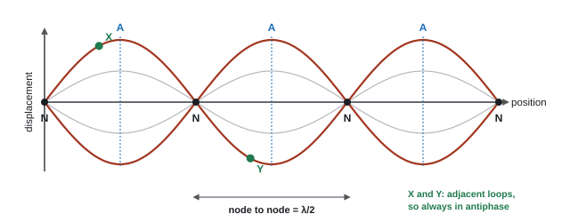

Progressive Waves
Drop a stone into a pond and the ripples spread out, but the water itself only bobs up and down. That is the whole idea of a wave: energy travels, the medium stays where it is. On this page we describe waves with a handful of quantities, link them with \(v = f\lambda\), learn to read wave graphs, measure the speed of sound, see why waves get weaker as they spread, and use echoes to find things we can't see.
Spec33Amplitude, frequency, period, speed and wavelength
Know what amplitude, frequency, period, wave speed and wavelength mean.
What a progressive wave is
- A progressive (travelling) wave transfers energy from one place to another without transferring matter. The particles of the medium (or the field values, for light) just oscillate about a fixed equilibrium position.
- Mechanical waves (sound, waves on a string) need a medium. Electromagnetic waves don't: they cross a vacuum.
The five terms
| Term | Symbol, unit | Meaning |
|---|---|---|
| Displacement | x or s, m | distance and direction of a point from its equilibrium position |
| Amplitude | A, m | the maximum displacement from equilibrium (not peak to trough) |
| Wavelength | λ, m | the distance between two adjacent points in phase, e.g. crest to crest |
| Period | T, s | the time for one complete oscillation of a point on the wave |
| Frequency | f, Hz | the number of oscillations per second (1 Hz = 1 s⁻¹) |
| Wave speed | v, m s⁻¹ | the distance the wave (the energy) travels per second |
Frequency and period are reciprocals:
Period and frequency
Which graph gives which quantity

| Graph | Shows | Read off it |
|---|---|---|
| Displacement–distance | a snapshot of the whole wave at one instant | wavelength λ and amplitude A |
| Displacement–time | how one point moves as time passes | period T (so f = 1/T) and amplitude A |
To find the speed you need λ from the first graph and f from the second. You can never get λ from a displacement–time graph.
Reading an oscilloscope
- Period = (number of horizontal divisions for one cycle) × (time-base setting).
- Measure across several complete cycles and divide. This cuts the percentage uncertainty.
frequency from an oscilloscope trace
Three complete cycles span 7.5 divisions. The time base is 2.0 ms div⁻¹.
Time for 3 cycles = 7.5 × 2.0 ms = 15 ms, so T = 15 ms ÷ 3 = 5.0 ms = 5.0 × 10⁻³ s.
f = 1/T = 1 ÷ (5.0 × 10⁻³ s) = 200 Hz (2 s.f.).
- "Use of f = 1/T"; "Use of v = fλ".
- Oscilloscope questions: "uses at least 3 waves to determine T" is a marking point on its own (WPH12 Jun 2024).
- Amplitude: "maximum displacement" from the equilibrium/rest position.
Often asked as: MCQs on which graph gives which quantity, reading T from a trace, comparing two traces on one screen.
Reading a "wavelength" off a displacement–time graph. The distance between peaks there is the period.
Measuring amplitude peak to trough (that is 2A).
Leaving the time base in ms (or µs) when working out f. Convert to seconds first.
Two sound traces on one screen, same time base: if wave 1 shows one-third as many cycles, its frequency is a third, so its wavelength is three times as long, because the speed of sound is the same for both and v = fλ (WPH12 Jun 2024).
Spec34The wave equation v = fλ
Use v = fλ to link wave speed, frequency and wavelength.
Where it comes from
In one period T the source makes one complete oscillation, and the wave moves forward one wavelength. Speed = distance ÷ time:
The wave equation
v = wave speed (m s⁻¹), f = frequency (Hz), λ = wavelength (m). It is on the formulae sheet.
What sets what
- The source sets the frequency. The medium sets the speed. The wavelength then follows: λ = v/f.
- At a fixed speed, f and λ are inversely proportional: double f and λ halves.
- When a wave crosses into a new medium its frequency stays the same. Its speed changes, so its wavelength changes in proportion (light slows in glass, so λ gets shorter).
| Wave | Typical speed |
|---|---|
| Sound in air (room temperature) | about 330–340 m s⁻¹ |
| Sound in water | about 1500 m s⁻¹ |
| Sound in steel | about 5000–6000 m s⁻¹ |
| Any EM wave in a vacuum (and almost in air) | c = 3.00 × 10⁸ m s⁻¹ |
v = fλ, and a change of medium
(a) A 512 Hz tuning fork in air, v = 340 m s⁻¹: λ = v/f = 340 ÷ 512 = 0.664 m (3 s.f.).
(b) Light of frequency 5.00 × 10¹⁴ Hz goes from air into water, where its speed is 2.26 × 10⁸ m s⁻¹.
In air: λ = 3.00 × 10⁸ ÷ 5.00 × 10¹⁴ = 6.00 × 10⁻⁷ m (600 nm).
In water: f is unchanged, so λ = 2.26 × 10⁸ ÷ 5.00 × 10¹⁴ = 4.52 × 10⁻⁷ m = 452 nm (3 s.f.).
Speed is distance travelled divided by the time taken:
\[ v = \frac{\text{distance}}{\text{time}} \]Watch one crest. In one period \(T\) the source makes exactly one complete oscillation, so it sends out exactly one more wavelength. The crest moves forward by exactly one wavelength \(\lambda\) in that time:
\[ v = \frac{\lambda}{T} \]After a time \(T\), the particle one wavelength ahead is doing exactly what this one was doing, so the whole pattern has shifted along by \(\lambda\).
Since \(f = 1/T\), dividing by \(T\) is the same as multiplying by \(f\):
\[ \boxed{v = f\lambda} \]A loudspeaker emits a note of frequency 440 Hz. The speed of sound is 340 m s⁻¹ in air and 1500 m s⁻¹ in water.
(a) Calculate the wavelength of the sound in air.
(b) The sound passes into a swimming pool. State its frequency in the water and calculate its wavelength there.
Show solution
(a) Rearrange \(v = f\lambda\):
\[ \lambda = \frac{v}{f} = \frac{340}{440} = 0.773\ \text{m}\ (3\ \text{s.f.}) \](b) The frequency is set by the source and doesn't change at the boundary: \(f = 440\ \text{Hz}\). The speed increases, so the wavelength increases in proportion:
\[ \lambda = \frac{1500}{440} = 3.41\ \text{m}\ (3\ \text{s.f.}) \]- "Use of v = fλ" is almost always the first mark, credited even if only implied by the numbers.
- In graph questions, a plot of λ against 1/f is a straight line through the origin and "gradient = v" must be stated.
Often asked as: one-step calculations with prefixes (kHz, MHz, nm), λ found from a stationary-wave pattern first, comparing travel times of light and sound.
Thinking the frequency changes when a wave enters a new medium. It doesn't: v and λ change together (WPH12 Jan 2020 examiner report).
Prefix slips: 1 nm = 10⁻⁹ m, 1 µs = 10⁻⁶ s, 1 MHz = 10⁶ Hz.
Unfamiliar wave-speed formulas given in the question, which you just substitute into: deep-water waves v = √(gλ/2π) and shallow-water waves v = √(gd) (WPH12 Jan 2020).
Seismic S-waves have v = √(G/ρ). A liquid has G = 0, so S-waves can't travel through liquids (WPH12 Jun 2022).
Spec35Longitudinal waves
Describe a longitudinal wave using the displacement of the molecules and the variation in pressure.
What it is
- In a longitudinal wave the particles oscillate parallel to the direction the wave travels (the direction of energy transfer).
- Examples: sound, ultrasound, seismic P-waves, a slinky pushed back and forth along its length.
- They need a medium, and they cannot be polarised.
Compressions and rarefactions
- A compression is a region where the molecules are pushed closer together, so the pressure is above normal (a pressure maximum).
- A rarefaction is a region where the molecules are further apart, so the pressure is below normal (a pressure minimum).
- Each layer of air moves forwards and backwards about its own rest position. No air travels with the wave.
- One wavelength = the distance from one compression to the next (or one rarefaction to the next).
Displacement and pressure are a quarter-cycle apart
Look at one compression. The air on its left has moved right (towards it) and the air on its right has moved left (towards it). The layer right at the centre has been squeezed from both sides but has not moved: its displacement is zero. The same is true at the centre of a rarefaction (neighbours have moved away from it). Maximum displacement is halfway between a compression and a rarefaction, where the pressure is normal.

A sound wave has frequency 500 Hz. On its displacement–distance graph, the centre of a compression and the centre of the nearest rarefaction are 0.34 m apart. Calculate the speed of the sound.
Show solution
A compression and the next rarefaction are half a wavelength apart (R to T in the figure), so
\[ \lambda = 2 \times 0.34 = 0.68\ \text{m} \] \[ v = f\lambda = 500 \times 0.68 = 340\ \text{m s}^{-1} \]- Longitudinal: "oscillations/vibrations are parallel to the direction of wave travel / energy transfer / propagation".
- "Zero displacement at all compressions and rarefactions."
- Rarefactions are "points where the pressure is a minimum" (not where displacement is a minimum).
Often asked as: MCQs on where displacement is zero; sketch the displacement–distance graph from a pressure–distance graph; define and compare transverse and longitudinal.
Thinking only the centre of a compression has zero displacement. The centre of every rarefaction does too (WPH12 Oct 2022 examiner report).
Assuming a sine-shaped graph means the wave is transverse. A displacement–distance graph of sound is a graph, not a picture.
Writing "the particles move along with the wave". They oscillate about fixed positions.
Comparing a sound wave with a stationary wave on a string (5 marks): same frequency; different speeds and wavelengths; every point of the sound wave has the same amplitude but the stationary wave's amplitude varies; the sound wave transfers energy, the stationary wave doesn't; string transverse, sound longitudinal. Don't contradict yourself ("different speeds but the same wavelength" can't be true at the same frequency) (WPH12 Jun 2023).
Spec36Transverse waves
Describe transverse waves.
What it is
- In a transverse wave the oscillations are perpendicular to the direction of wave travel (the direction of energy transfer).
- Highest points are crests (peaks), lowest points are troughs.
- Examples: all electromagnetic waves (light, radio, X-rays), waves on a string or rope, seismic S-waves, a slinky shaken side to side.
- Transverse waves can be polarised (49). That is the one behaviour that separates them from longitudinal waves.
| Transverse | Longitudinal | |
|---|---|---|
| Oscillation direction | perpendicular to travel | parallel to travel |
| Features | crests and troughs | compressions and rarefactions |
| Examples | EM waves, string, S-waves | sound, ultrasound, P-waves |
| Polarisation | yes | no |
| Reflection, refraction, diffraction, superposition, interference | yes | yes |
Which way does a point move next?
On a displacement–distance snapshot of a transverse wave moving to the right:
- Redraw the wave shifted a tiny distance to the right.
- See whether the point's new displacement is higher or lower. That is the way it moves now.
- Points at a crest or trough are momentarily stationary; points at zero displacement move fastest.
- "Oscillations/vibrations perpendicular to the direction of wave travel / energy transfer / propagation" (1 mark).
- "Only transverse waves can be polarised." Refraction, diffraction and superposition happen for both kinds.
Often asked as: 1-mark definitions, transverse v longitudinal (2 marks), MCQs on which property needs a transverse wave.
"Perpendicular to the wave" on its own is vague. Say perpendicular to the direction of travel / energy transfer.
Saying all transverse waves travel at the same speed. Only EM waves share a speed (in a vacuum).
Radio waves from an aerial are plane polarised, so a receiving aerial must be aligned with the transmitting one, acting like a polarising filter (WPH12 Jan 2026).
Spec37Graphs of transverse, longitudinal and stationary waves
Draw and interpret graphs of transverse and longitudinal waves, including stationary waves.
The checklist for any wave graph
- Read the axes first. Distance on the x-axis → λ; time on the x-axis → T.
- Displacement on the y-axis gives the amplitude. Pressure on the y-axis (sound only) shows compressions as maxima.
- For a longitudinal wave, + displacement means "moved in the direction of travel", − means "moved back". The graph is not a picture of the wave.
Longitudinal: converting between the two graphs
- Pressure maxima (compressions) and minima (rarefactions) are where the displacement graph crosses zero.
- So the displacement graph is the pressure graph shifted by a quarter of a wavelength (see the figure in 35).
- When sketching: mark every C and R, put a zero of displacement at each, and draw a full sine curve through them with the same wavelength.
Stationary waves on a graph

- The amplitude depends on position: zero at nodes, maximum at antinodes.
- Every point between two adjacent nodes moves in phase (they all reach their maximum together).
- Points in adjacent loops are in antiphase (180° apart): when one is up, the other is down.
- Twice per cycle the whole string is flat (the middle grey line), and every point is moving fastest at that moment.
reading a stationary-wave snapshot
A string shows three loops over 1.80 m at 50 Hz.
Three loops = 3 × λ/2, so λ = 2 × 1.80 ÷ 3 = 1.20 m.
Points in the first and second loops: antiphase. Two points in the same loop: in phase, but with different amplitudes unless they are the same distance from a node.
Wave speed of the travelling waves that make it: v = fλ = 50 × 1.20 = 60 m s⁻¹ (2 s.f.).
A displacement–distance graph for a wave on a rope shows crests 1.2 m apart and a maximum displacement of 3.0 cm. A displacement–time graph for one point on the rope shows the pattern repeating every 0.080 s.
(a) Calculate the frequency and the speed of the wave.
(b) How far does a crest travel in 0.20 s?
Show solution
(a) The period comes from the displacement–time graph, the wavelength from the displacement–distance graph:
\[ f = \frac{1}{T} = \frac{1}{0.080} = 12.5\ \text{Hz} \] \[ v = f\lambda = 12.5 \times 1.2 = 15\ \text{m s}^{-1} \](b) The crest moves at the wave speed: \(15 \times 0.20 = 3.0\ \text{m}\). The amplitude (3.0 cm) isn't needed: it doesn't affect the speed.
- Phase between two points: "in antiphase" because they are "in adjacent node-to-node regions/loops" (WPH12 Jun 2022).
- Different amplitudes: "S is at an antinode and T is between a node and an antinode".
- Drawing: correct shape, a node at each fixed end, antinode(s) in the right place.
Often asked as: phase and amplitude of points on a stationary wave (MCQ), sketch a pattern, read an oscilloscope trace, sketch displacement from pressure.
Saying points in different loops are in phase. Adjacent loops are always in antiphase (WPH12 Jan 2022 examiner report).
Saying a node has "minimum displacement". It has zero amplitude: its displacement is always zero.
Spec38Core practical 4: speed of sound in air
Find the speed of sound in air using a two-beam oscilloscope, a signal generator, a loudspeaker and a microphone.
Principle
The oscilloscope shows two traces at once: the signal driving the loudspeaker and the signal picked up by the microphone. Moving the microphone one wavelength further from the speaker brings its trace back to the same phase relationship with the generator's trace. Measure λ that way, read f from the generator, and use v = fλ.
Core practical 4: method in brief
- Connect the signal generator to the loudspeaker and to channel 1 of the oscilloscope. Connect the microphone to channel 2. Set f to about 2–5 kHz.
- Put the speaker and microphone on a bench along a metre rule. Move the microphone until the two traces are in phase (peaks line up). Record its position.
- Slide the microphone away from the speaker, counting each time the traces come back in phase. Each return = one more wavelength. Move through several (e.g. 5) wavelengths and record the final position.
- λ = total distance ÷ number of wavelengths.
- Check f by measuring T on the oscilloscope (several cycles), f = 1/T, as well as reading the generator dial.
- Repeat for several frequencies.
Analysis: plot λ (y) against 1/f (x). It is a straight line through the origin with gradient = v.
Variables
- Independent: frequency of the signal generator.
- Dependent: wavelength (microphone distance moved per cycle of phase).
- Control: room temperature (sound speed depends on it), speaker and microphone heights, keep the same "in phase" judgement each time.
Errors and improvements
- Judging exactly when the traces line up is the biggest uncertainty. Reduce it by measuring across many wavelengths, and by using lower frequencies (longer λ), so the same ± distance is a smaller percentage.
- Reflections from the bench, walls and ceiling add extra waves that blur the pattern. Work away from walls, put soft material on the bench.
- No reaction time is involved: the oscilloscope does the timing.
- Safety: keep the volume low.
processing CP4 results
At f = 4.00 kHz the traces are in phase at 12.0 cm and again, five wavelengths later, at 54.5 cm. Each reading is ±0.5 cm.
5λ = 54.5 − 12.0 = 42.5 cm, so λ = 8.50 cm = 0.0850 m.
v = fλ = 4.00 × 10³ × 0.0850 = 340 m s⁻¹ (3 s.f.).
Uncertainty in the distance = 0.5 + 0.5 = ±1.0 cm. Over five wavelengths: 1.0 ÷ 42.5 × 100 = 2.4 %. Measured over one wavelength (8.5 cm) it would be 12 %.
In Core Practical 4 the signal generator is set to 2.50 kHz. The microphone positions at which the traces are in phase are 12.0, 25.8, 39.5, 53.4 and 67.0 cm. Find the speed of sound.
Show solution
Successive positions are one wavelength apart. Plotting position against \(n = 0, 1, 2, 3, 4\) gives a best-fit gradient of 13.76 cm. Without a graph, use the first and last readings (four wavelengths apart), which uses all the spacing at once:
\[ \lambda = \frac{67.0 - 12.0}{4} = 13.75\ \text{cm} = 0.1375\ \text{m} \] \[ v = f\lambda = 2500 \times 0.1375 = 344\ \text{m s}^{-1} \]This is close to the accepted 343 m s⁻¹ at 20 °C. Averaging the four separate gaps (13.8, 13.7, 13.9, 13.6 cm) gives the same answer, because the middle readings cancel out.
- Method marks: microphone and speaker both on the oscilloscope; start with traces in phase (or antiphase); move the microphone until they are next in phase (antiphase); "distance moved = λ" (or λ/2 from in phase to antiphase); f from the generator or from T on the screen; then v = fλ.
- The final mark wants the route, e.g. "plot λ against 1/f, gradient = v" or "multiply λ by 1/T", not just "use v = fλ".
- The oscilloscope beats the ear: "hard for a person to judge when the sound is loudest/quietest"; "the oscilloscope can measure amplitude more accurately" (WPH12 Jun 2019).
- Percentage uncertainty is larger for a shorter λ (higher f). Don't write "uncertainty" when you mean "percentage uncertainty".
Often asked as: describe the method (5 marks), interpret two traces, % uncertainty at two frequencies, the two-speaker variant.
Two-speaker variant: the microphone finds quiet points where the path difference is λ/2. Path lengths come from Pythagoras, e.g. √(3.00² + 3.34²) − √(3.00² + 1.66²) = 4.49 − 3.43 = 1.06 m = λ/2, so λ = 2.12 m and v = 160 Hz × 2.12 m = 339 m s⁻¹. Reflections from walls and ceiling make the maxima and minima less clear (WPH12 Jun 2019).
Resonance-tube versions of the experiment: see 41.
Spec44Intensity of radiation, I = P/A
Use I = P/A for the intensity of radiation.
Definition
Intensity is the power transferred per unit area, through an area perpendicular to the direction the wave travels.
Intensity of radiation
I = intensity (W m⁻²), P = power (W), A = area (m²). It is on the formulae sheet.
The inverse square law
A point source sends its power out equally in all directions. At distance r the power is spread over the surface of a sphere, A = 4πr²:
Intensity from a point source
- Double the distance → intensity drops to a quarter. Triple it → a ninth.
- This assumes no energy is absorbed on the way.
- Intensity also rises with the square of the amplitude (twice the amplitude, four times the intensity).
point source and the Sun
(a) A small speaker emits 0.50 W of sound equally in all directions. At 3.0 m:
I = P/4πr² = 0.50 ÷ (4π × 3.0²) = 0.50 ÷ 113 = 4.4 × 10⁻³ W m⁻² (2 s.f.). At 6.0 m it is a quarter of this, 1.1 × 10⁻³ W m⁻².
(b) Sunlight at the Earth (1.50 × 10¹¹ m from the Sun) has intensity 1.36 × 10³ W m⁻². Power of the Sun:
P = I × 4πr² = 1.36 × 10³ × 4π × (1.50 × 10¹¹)² = 3.85 × 10²⁶ W (3 s.f.).
tilted solar panel
Sunlight of intensity 1.00 kW m⁻² falls on a 1.60 m² panel. The light meets the panel at 30.0° to its normal. The panel is 18.0 % efficient.
Effective area facing the Sun = A cos θ = 1.60 × cos 30.0° = 1.386 m².
Power arriving = 1.00 × 10³ × 1.386 = 1386 W.
Useful output = 0.180 × 1386 = 249 W (3 s.f.).
A point source radiates power \(P\) equally in every direction. At a distance \(r\) all of that power passes through an imaginary sphere of radius \(r\), whose surface area is
\[ A = 4\pi r^2 \]Apply the definition of intensity to that sphere:
\[ \boxed{I = \frac{P}{4\pi r^2}} \]So \(I \propto 1/r^2\). Double the distance and the same power covers \(2^2 = 4\) times the area, so the intensity falls to a quarter. Triple it and the intensity falls to a ninth.
This assumes nothing is absorbed on the way and the source really does radiate evenly in all directions.
A small loudspeaker emits 0.50 W of sound evenly in all directions.
(a) Calculate the intensity 3.0 m from the speaker.
(b) An eardrum has an area of \(6.0 \times 10^{-5}\ \text{m}^2\). Calculate the sound power entering one ear at this distance.
(c) At what distance would the intensity fall to \(1.0 \times 10^{-4}\ \text{W m}^{-2}\)?
Show solution
(a) The power spreads over a sphere of radius 3.0 m:
\[ I = \frac{P}{4\pi r^2} = \frac{0.50}{4\pi \times 3.0^2} = 4.42\times10^{-3}\ \text{W m}^{-2} \](b) Rearrange \(I = P/A\) for the small area of the eardrum:
\[ P = IA = 4.42\times10^{-3} \times 6.0\times10^{-5} = 2.7\times10^{-7}\ \text{W} \](c) Rearrange for \(r\):
\[ r = \sqrt{\frac{P}{4\pi I}} = \sqrt{\frac{0.50}{4\pi \times 1.0\times10^{-4}}} = \sqrt{398} = 20\ \text{m} \]Check with ratios: the intensity has dropped by a factor of 44, so the distance has grown by \(\sqrt{44} = 6.6\), and \(3.0 \times 6.6 = 20\ \text{m}\).
- "Use of I = P/A", "use of A = 4πr²" (a dimensionally correct area: not πr² for a sphere), then compare with the quoted value and conclude.
- Intensity definition: "power per unit area" or "energy per second per metre squared".
- MCQ: power constant, so I × A is constant; doubling distance quarters I.
Often asked as: on almost every paper: stars and the Sun, routers, LEDs, solar panels with efficiency, number of photons per second from an intensity (58).
Using πr² instead of 4πr² for a point source.
Not converting cm² to m² (1 cm² = 10⁻⁴ m²). This turned 0.48 W into 48 W for many (WPH12 Jan 2025 examiner report).
Comparing different time spans (a year's energy against one hour's) or giving a power when an energy is asked for. Use E = Pt and convert hours and years to seconds.
The cos θ factor for a tilted panel and efficiency = useful power out ÷ total power in appear regularly, e.g. 1.1 kW m⁻² × 2.2 m² × cos 57° = 1.32 kW, of which 20 % is used (WPH12 Jun 2026).
Spec55Transmission and reflection at an interface
Understand that waves can be transmitted and reflected where two media meet.
What happens at a boundary
- When a wave reaches the boundary between two media in which it travels at different speeds (different densities or materials), part of it is reflected and part is transmitted (refracted if it arrives at an angle). Some energy may also be absorbed.
- The bigger the difference between the two media, the more is reflected and the less is transmitted. Similar media → mostly transmitted.
- Reflection obeys the law of reflection: angle of incidence = angle of reflection (measured from the normal).
- As a wave travels on through a medium, absorption keeps reducing its amplitude, so echoes from deep boundaries are weak.
Examples
| Boundary | What happens | Consequence |
|---|---|---|
| air–skin (ultrasound) | very different: almost all reflected | gel is used to remove the air layer so the ultrasound gets in |
| soft tissue–soft tissue | similar: small reflection, most transmitted | each organ boundary gives a small echo, and deeper ones can still be reached |
| soft tissue–bone or lung (air) | very different: most reflected | little reaches what lies behind |
| steel–air in a cracked rail | very different | a crack gives a strong echo |
- "Reflects at a boundary between different materials / media / densities"; "the speed of ultrasound in air is different from that in steel" is accepted.
- "Some of the pulse is transmitted / passes through."
- "Bounces back" is ignored. Write reflected.
Often asked as: why part of a pulse is reflected, why deeper features give weaker or no echoes, why little ultrasound reaches the lungs (MCQ).
If the first crack reflects most of the pulse, too little energy reaches a deeper crack for its echo to be detected (WPH12 Oct 2019).
Spec56Pulse-echo techniques
Understand how a pulse-echo technique locates an object, and how the wavelength and the pulse duration limit the information you can get.
How it works
- A transmitter sends out a short pulse of waves (ultrasound, sonar, radar, laser light).
- The pulse is reflected from each boundary or object it meets.
- A receiver detects the echoes and the time between sending and receiving is measured.
- The pulse goes there and back, so with the wave speed known:
Distance from a pulse-echo time
The time of each echo gives the depth of each boundary; the strength of the echo says something about the boundary.
What limits the detail
| Limit | Why | Consequence |
|---|---|---|
| Wavelength | waves diffract round objects about the size of λ or smaller, so they don't reflect a clear echo | you can't resolve detail smaller than about λ. Higher frequency → shorter λ → finer detail. But high frequencies are absorbed more, so they don't reach as deep |
| Pulse duration | a long pulse means a long echo; echoes from two close boundaries overlap | two boundaries closer than about (v × pulse duration)/2 can't be told apart. Shorter pulses → better depth resolution |
| Time between pulses | each echo must return before the next pulse is sent, or you can't tell which pulse it came from | maximum range = v × (time between pulses)/2 |
ultrasound scan
Ultrasound in soft tissue travels at 1540 m s⁻¹.
(a) An echo returns 65 µs after the pulse: depth = vt/2 = 1540 × 65 × 10⁻⁶ ÷ 2 = 0.050 m (5.0 cm).
(b) At 3.5 MHz, λ = v/f = 1540 ÷ 3.5 × 10⁶ = 4.4 × 10⁻⁴ m, so detail smaller than about 0.4 mm can't be resolved.
(c) A 2.0 µs pulse is 1540 × 2.0 × 10⁻⁶ = 3.1 mm long in tissue. Boundaries closer than about half this, 1.5 mm, give overlapping echoes.
(d) Pulses sent every 0.20 ms: the deepest echo that returns in time comes from 1540 × 0.20 × 10⁻³ ÷ 2 = 0.15 m.
An ultrasound scanner sends pulses of frequency 3.0 MHz into soft tissue, where the speed of sound is 1540 m s⁻¹. Each pulse lasts 2.0 μs. An echo from a boundary returns 65 μs after the pulse is sent.
(a) Calculate the depth of the boundary.
(b) Calculate the wavelength and the number of complete waves in each pulse.
(c) Two boundaries are 1.0 mm apart. Explain whether this scanner can show them as separate boundaries.
Show solution
(a) The pulse goes there and back, so halve the total distance:
\[ d = \frac{vt}{2} = \frac{1540 \times 65\times10^{-6}}{2} = 0.050\ \text{m} = 5.0\ \text{cm} \](b) \(\lambda = \dfrac{v}{f} = \dfrac{1540}{3.0\times10^{6}} = 5.1\times10^{-4}\ \text{m} = 0.51\ \text{mm}\). Number of cycles = pulse duration × frequency \(= 2.0\times10^{-6} \times 3.0\times10^{6} = 6\).
(c) The pulse is \(v\tau = 1540 \times 2.0\times10^{-6} = 3.1\ \text{mm}\) long. Echoes from boundaries 1.0 mm apart arrive \(2 \times 1.0\times10^{-3}/1540 = 1.3\ \mu\text{s}\) apart, which is less than the 2.0 μs pulse duration. The echoes overlap and merge, so the scanner cannot resolve them. It would need pulses shorter than 1.3 μs (for example fewer cycles, or a higher frequency).
- 6-mark structure: pulses sent; reflected at boundaries; time between sending and receiving measured; speed known; distance = speed × time; half the time (or half the distance).
- "Uses half time or half distance" is almost always a separate mark.
- Resolution: "higher frequency, shorter wavelength", "more detail / better resolution", "smaller objects can be detected".
Often asked as: timing calculations with the factor of 2 (often ending in a claim to check), 6-mark descriptions of the technique, why a higher frequency is used, the effect of pulse length or the time between pulses.
Forgetting to halve the time.
"Bounces back" instead of "reflected" (WPH12 Jan 2020 examiner report).
Not converting ms or µs to seconds (WPH12 Jun 2024 examiner report).
Saying a longer gap between pulses "increases distance" without the reason: the echo must return before the next pulse goes out (WPH12 Jun 2024).
Laser altimetry from a satellite: height = c × t/2 (e.g. 3.20 ms gives 480 km); only photons from the laser should be counted, as other light adds false signals (WPH12 Oct 2021).
Quick checks
In a sound wave, what is the distance between the centre of a compression and the centre of the next rarefaction?
Compression to compression is one wavelength, and the rarefaction sits halfway between them. On a transverse wave, crest to trough is \(\lambda/2\) for the same reason.
Sound passes from air into water, where it travels about four times faster. What happens to its frequency and wavelength?
The source fixes the frequency, so \(f\) can't change at the boundary. Since \(v = f\lambda\), a four times bigger \(v\) means a four times longer \(\lambda\).
A transverse wave travels to the right along a rope. Point P has zero displacement, and the nearest crest is just to its left. Which way is P moving at this instant?
The crest is moving right, towards P, so P is about to be at a crest: it must be rising. Particles in a transverse wave never move along the direction of travel, and they are only at rest at a crest or trough, not at zero displacement (where they move fastest).
The intensity 2.0 m from a point source is 36 W m⁻². What is the intensity 6.0 m from the source?
The distance has tripled, so the area has gone up by \(3^2 = 9\): \(36/9 = 4.0\ \text{W m}^{-2}\). Dividing by 3 would treat intensity as \(\propto 1/r\).
A ship's echo sounder receives the echo from the sea bed 0.40 s after sending the pulse. Sound travels at 1500 m s⁻¹ in sea water. How deep is the sea?
\(d = vt/2 = 1500 \times 0.40 / 2 = 300\ \text{m}\). 600 m is the total distance down and back up.
In Core Practical 4, the signal generator is set to 4.0 kHz. Through what distance must the microphone be moved for the two traces to go from in phase to in phase again? (Speed of sound = 340 m s⁻¹.)
The traces come back into phase each time the microphone moves one wavelength: \(\lambda = v/f = 340/4000 = 0.085\ \text{m}\). Half of this (4.3 cm) is where they are in antiphase.